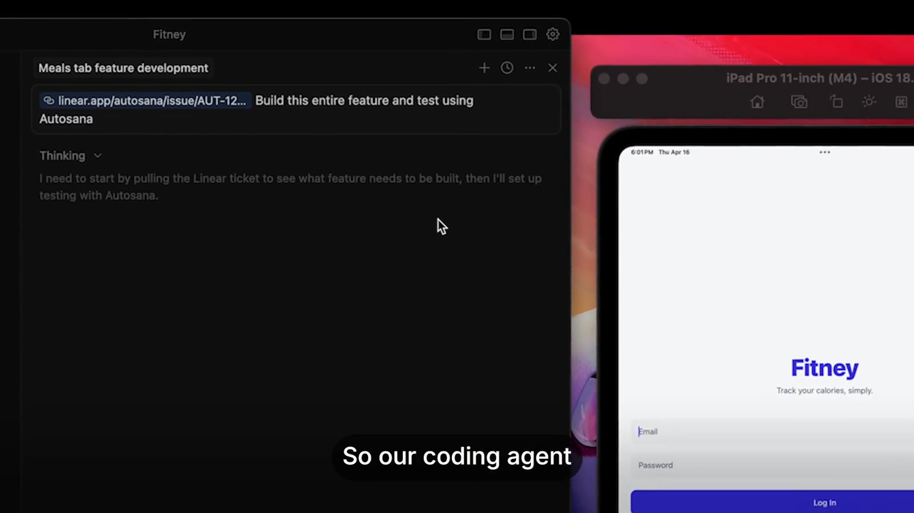
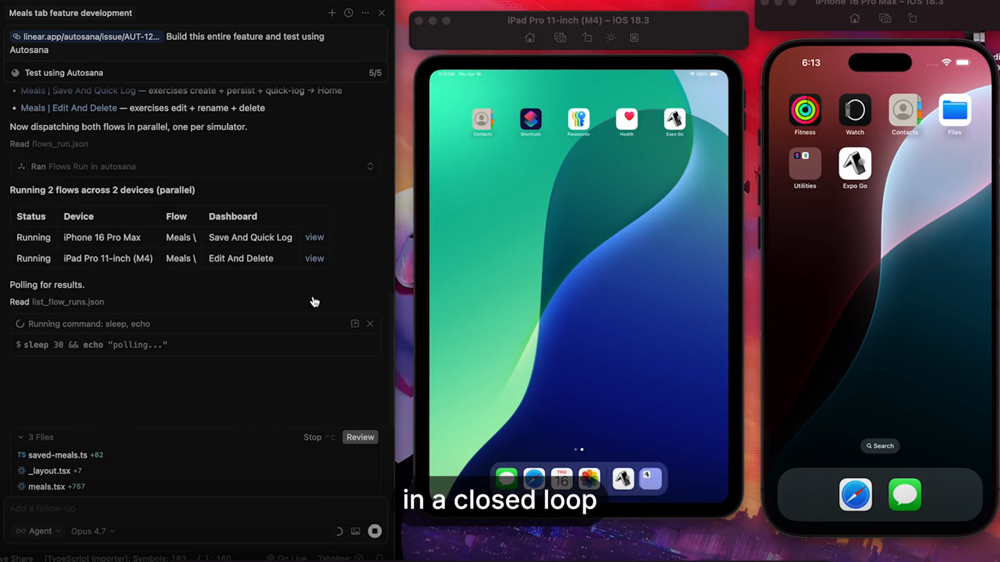
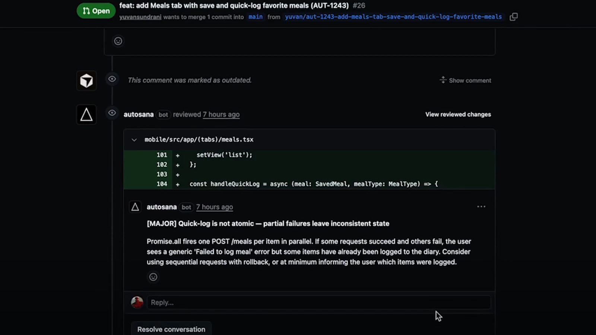
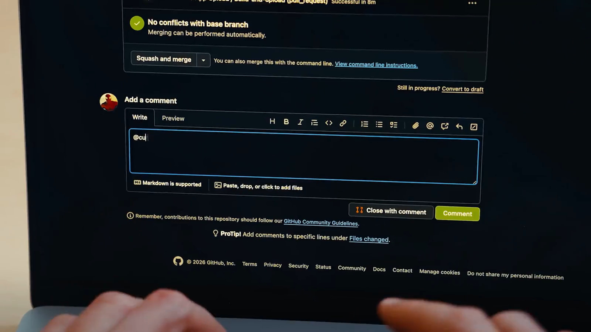
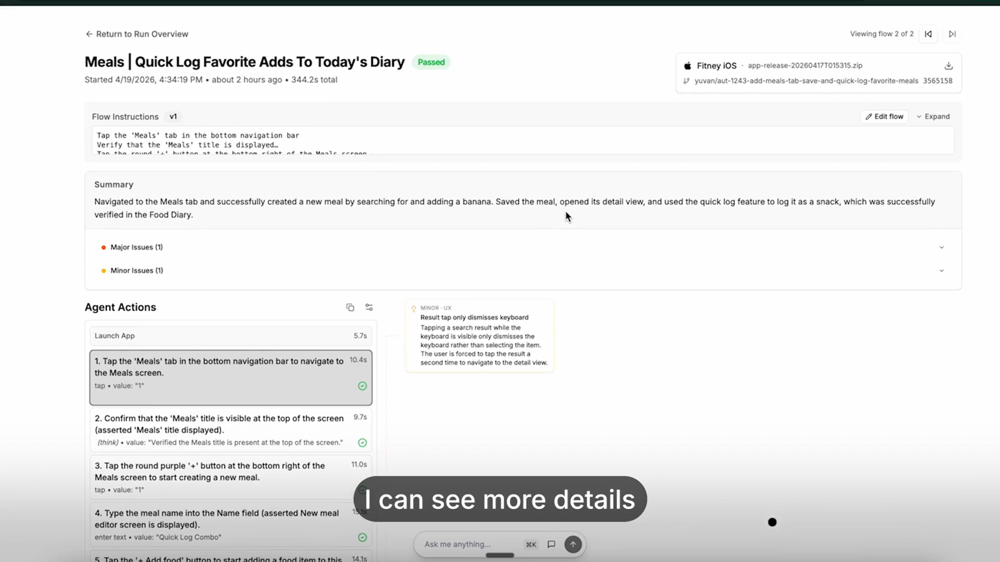
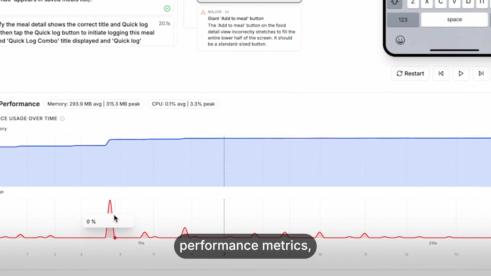

Autosana — 機能・導線・画面
確認日：2026年10月27日。比較の見どころ・画面／動画ギャラリー
調査範囲
Web／モバイルのフロー、ローカル／クラウド、PR検証、開発Agentの修正ループを広く扱う。
公式動画とDocs。自社アプリ接続、hooks・private network・実機・PR botは未実行。動画に表示された成功は提供者のサンプル。
作業の流れ
Apps → Flows → Suites → Environment・Variables・Hooks → Run／Automation／PR → Issues・動画・Network → Agent修正 → 再実行
機能の構成
Overview / Issues / Runs / Flows / Apps / Hooks / Automations / Settings。DocsにSuites / Environments / Variables / Notifications / Performance / Network。
下表は公開説明・文書の要約。実操作した範囲は画面一覧と調査範囲に限定し、表全体を実機検証済みとはしない。
| 段階 | 画面・機能 | 入力・操作と次の行動 |
|---|---|---|
| 接続 | Apps | WebのURL、モバイルのbuild・対象環境を用意する。 |
| 作成 | Flows | 自然言語の操作・期待をフローとして作成・編集する。コード管理・CLI同期も案内。 |
| 構成 | Suites・Environment・Variables | 複数フロー、実行先、共通値を分けて管理する。 |
| 前後処理 | Hooks | 準備・後始末・外部連携をフロー本体から分離する。 |
| 実行 | Local・Cloud・Automation | 端末／browserで実行。手動・自動化・PR起点を扱う。 |
| 結果 | Runs・Issues | 操作動画、バグ・UX所見と実行結果を確認する。 |
| 調査 | Network・Performance | 通信と性能・device logsの根拠へ掘り下げる。 |
| 修正・継続 | GitHub bot・Agent・再検証 | PRに結果を返し、文脈付きで修正Agentへ渡し、修正後を再確認する。 |
人の担当と比較上の着眼点
アプリ・認証・実行データ、フローの期待、issueの妥当性、修正の採否。
調査者の解釈：QA画面単独ではなく、IDE→PR→結果→Agent修正→再実行の往復全体が比較対象になる。 製品性能の優劣を実証した結論ではない。
動画と見る場面
- 開発Agent→CLI→PR検証→不具合→修正→再検証の公式紹介（119.7秒、official-product-video）。公式の掲載元。
見る場面：
36秒：CLIの検証、
46秒：端末での実行、
60秒：PRへの結果、
81秒：修正Agentへの文脈、90秒：再検証の動画、
96秒：UX finding、
99秒：network・device logs。


画面一覧
製品内の画面は未収録。公開説明に基づく機能表と、実際のUIを確認できた範囲を分けている。